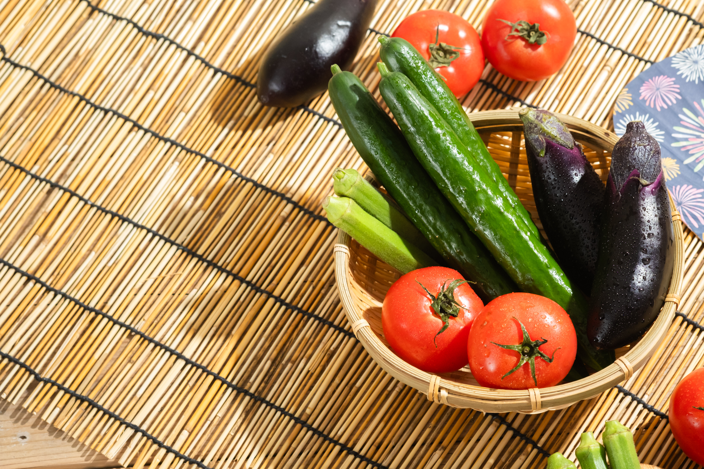

STEP 01
作物を登録する
＋ボタンから育てたい作物を追加。
アイコンとカラーを自由に選んで、自分だけの畑をつくれます。

Features
むずかしい設定はいりません。植えて、書いて、見守るだけ。
＋ボタンから育てたい作物を追加。
アイコンとカラーを自由に選んで、自分だけの畑をつくれます。
水やりや作業内容、ひとことメモも。
ふりかえることで、毎日の畑仕事がもっと楽しくなります。
作物ごとの記録を一覧でチェック。
育ちの様子を比べたり、来年の参考にもできます。


Q & A